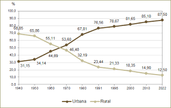
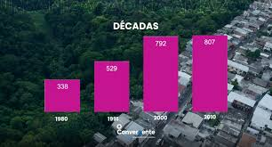
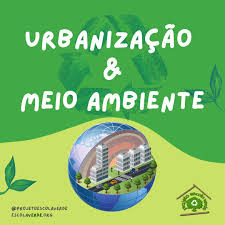

Como a urbanização afeta a sociedade?
Entenda como o crescimento das cidades influencia a vida das pessoas, a economia e a desigualdade social no Brasil.

A sustentabilidade urbana refere-se ao desenvolvimento de cidades que atendem às necessidades do presente sem comprometer a capacidade das futuras gerações de atenderem às suas próprias necessidades. Envolve a criação de ambientes urbanos ecologicamente corretos, economicamente viáveis e socialmente justos.
As áreas verdes, como parques e praças, ajudam a diminuir a temperatura, melhoram a qualidade do ar e proporcionam espaços de lazer para os moradores. Além disso, ajudam a absorver a água da chuva, reduzindo o risco de enchentes nas cidades.


As cidades inteligentes utilizam tecnologia para melhorar os serviços públicos e a qualidade de vida dos moradores. Sensores, inteligência artificial e redes integradas ajudam a controlar o trânsito, economizar energia e melhorar a segurança pública. O uso da tecnologia permite uma gestão mais eficiente dos recursos urbanos, tornando as cidades mais modernas e sustentáveis.
Pesquisas recentes têm mostrado que as plantas possuem uma variedade de mecanismos para se comunicar e reagir ao ambiente. Elas são capazes de detectar mudanças na luz, gravidade, solo e até mesmo toque, ajustando seu crescimento e comportamento de acordo. Este artigo explora como essas habilidades são cruciais para a biotecnologia e a agricultura.
A habitação é um dos aspectos mais importantes da urbanização. Ter acesso a moradias seguras e adequadas é fundamental para garantir o bem-estar da população. Programas habitacionais e investimentos em infraestrutura ajudam a reduzir o déficit de moradias e a melhorar as condições de vida nas cidades. O acesso à água tratada, esgoto, energia elétrica e transporte também influencia diretamente a qualidade de vida urbana.
O crescimento acelerado das cidades exige soluções modernas de planejamento urbano para garantir qualidade de vida, mobilidade e acesso a serviços públicos de qualidade. A integração entre tecnologia, sustentabilidade e políticas sociais é indispensável para enfrentar os desafios das grandes metrópoles contemporâneas.

Ao longo do tempo, a intensificação de máquinas agrícolas e do êxodo rural impulsionou o aumento do fluxo populacional nas áreas urbanas. O crescimento das cidades exige mais infraestrutura, como saneamento básico, eletricidade, transporte e habitação.
Sua ausência ou escassez afeta diretamente a saúde e o bem-estar da população, aumentando problemas como moradias irregulares e o risco de desastres naturais.
Prepare-se para transformar seus estudos e ir além! Aproveite agora nossas aulas, vídeos de resolução, ganhe confiança e alcance a sua melhor performance!
Entenda como o crescimento das cidades influencia a vida das pessoas, a economia e a desigualdade social no Brasil.
Descubra como câmeras, sensores e inteligência artificial ajudam a gerenciar cidades grandes e complexas.
Aprenda os pilares de uma cidade inteligente e como a sustentabilidade e a tecnologia caminham juntas.
Conheça as principais dificuldades enfrentadas no planejamento de moradia, transporte e saneamento básico.